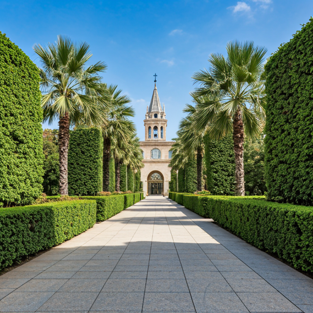

Turia Garden
9 kilometers of green space in a former riverbed. The city's longest linear park connecting nature, culture, and active recreation.
Urban Green Corridor
The longest and most sustainable park in Europe

A Sustainable City Planning Marvel
In 1957, Valencia decided to redirect the Turia river, transforming 9 kilometers of riverbed into a green park. Today it's a global example of sustainable urban design, connecting the Bioparc to the City of Arts & Sciences.
info Explore Guide
Length & Duration
9 km, walking ~2 hours, cycling ~30 minutes
Starting Points
Bioparc (north) or City of Arts (south)
Highlights
Ecological zones, museums, playgrounds, restaurants
Best For
Walking, cycling, running, family outings
Things to Do Along the Way
Cycling
160km of protected bikeway network throughout the city
Running Path
Safe, shaded running routes through green corridors
Museums
3 major museums: Science, Hemisfèric, IMAX
Dining Spots
Cafés and restaurants with local sustainable menus